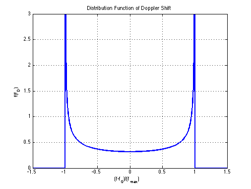

Distribution Function of Doppler Shift
Copyright 2007 Telecommunications Lab
fd = [-1.5:0.005:1.5]; fd_max=1; f_fd=fd; for(i=1:1:length(fd)), if(abs(fd(i))<fd_max), f_fd(i)=(1/pi)*(1/fd_max)/(sqrt(1-(fd(i)/(fd_max))^2)); else f_fd(i)=0; end end; plot(fd,f_fd,'LineWidth',2); xlabel('(f-f_0)/(f_{max})');ylabel('f(f_D)'); axis([-1.5 1.5 0 3]) title('Distribution Function of Doppler Shift') grid on;